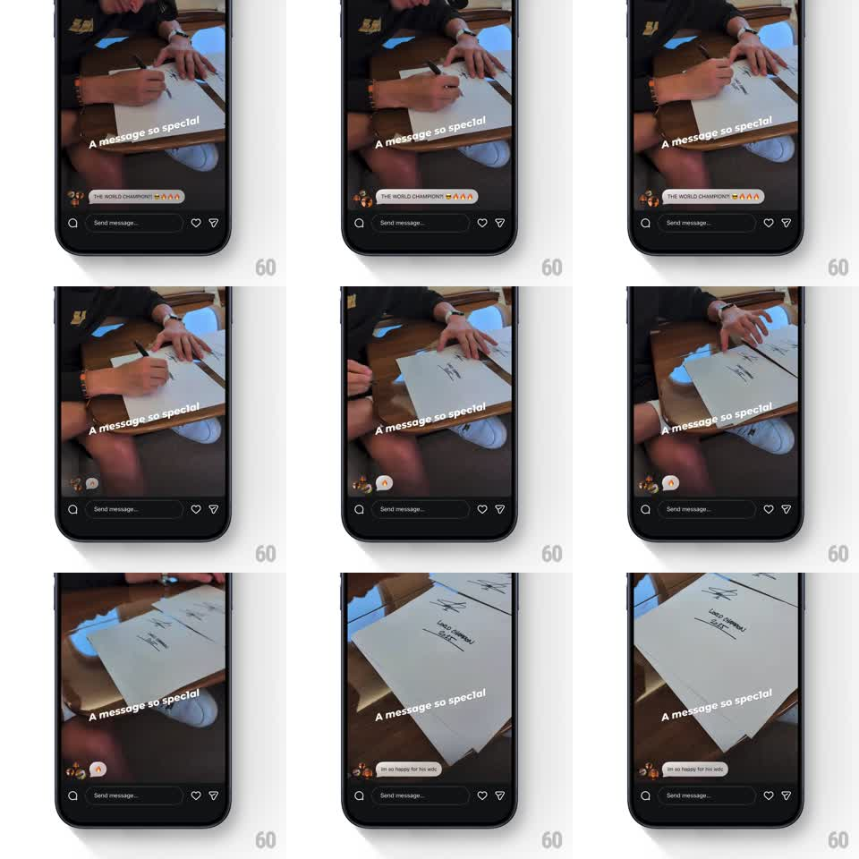

Media
Frame-by-frame

Rebuild this animation 1:1: Instagram's multi-reply story captions - stacked reply pills at the bottom of a story swap with a shrink-spin-fade out and a spin-grow-in.

Rebuild this animation 1:1: Instagram's multi-reply story captions - stacked reply pills at the bottom of a story swap with a shrink-spin-fade out and a spin-grow-in.
## Integration
Integration: stack-agnostic spec - springs given as stiffness/damping, timed motions as duration + curve; map every value to your framework and animation library of choice.
## Scene
Instagram story viewer: full-bleed video story ("A message so special" text overlaid on the footage), a "Send message..." input row with heart and share icons at the bottom. Floating just above the input: the current reply pill (replying avatars + text like "THE WORLD CHAMPIONS! 😎🔥🔥🔥" on a dark rounded chip).
## Motion spec
Pattern: reply pills swap with spin-shrink out and spin-grow in.
- Each reply pill holds for ~2.2s, then exits: it shrinks (scale 1 -> 0.2) while rotating ~120deg and fading out - 350ms, ease-in, pivoting around its leading avatar.
- The next pill enters 80ms later from the same anchor: scale 0.2 -> 1 while rotating back from -120deg to 0 and fading in - 450ms, ease-out with a small overshoot on both scale and rotation (~8deg past level, settling back).
- Pills with only an emoji render smaller (just the avatar + emoji); text pills size to content with a 12px max-width cap and truncation.
- The leading edge stacks the repliers' avatars (up to 3, overlapping circles); they enter with the pill, never independently.
- The story footage, overlay text, and input row never move - only the pill animates.
## Calibration
- The pill's anchor is bottom-left above the input - it never recenters per pill.
- Rotation direction is consistent: exit spins clockwise, entry counter-clockwise back to level.
## Reduced motion
Pills crossfade with a 12px rise (250ms) and no rotation.
## Don't miss
- The emoji-only pill is genuinely tiny next to text pills - honor the size difference.
- The dark chip has a subtle blur backdrop so the footage shows through.